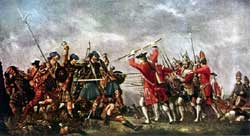
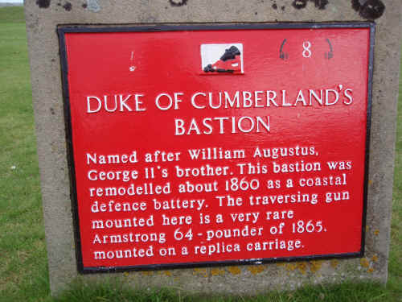

Latha Chuil-Lhodair
le Iain Ruaidh Stiùbhairt
Culloden Day
Text by John Roy Stewart (1700-1752)

In "Eachdraidh a Phrionnsa" by John McKenzie (1806-1848)
there is the remark "air fonn 'Mort Ghlinne-Cumhainn'" ,
"to be sung to the tune of "Massacre of Glencoe"
Sequenced by Ch.Souchon
Same tune
Sheet music - Partition
(Massacre of Glencoe)
Sung by Margaret Bennett, recorded by Morag McLeod, in 1988
Culloden Day
Scottish March in 4/4 time (myxolydian), published in 1887 in the "Skye Collection". It is also known as "The Inverness Gathering".
Note: The English translation fits "Massacre of Glencoe", whereas the French translation (is an attempt to fit) "Culloden Day".
Tune "Culloden Day"
, which is the sound back ground to the present page.
(Source "The Fiddler's Companion" -see Links)
Culloden Day
Marche écossaise à 4 temps (mode myxolydien), publiée en 1887 dans la "Skye Collection". Elle porte aussi le titre "The Inverness Gathering".
Note: La traduction anglaise va avec "Le Massacre de Glencoe", tandis que la traduction française (s'efforce de) se calquer sur "la Journée de Culloden", le fond sonore de cette page.
Pipes variant
(Unknown sequencer)

Culloden Day
1. Great is the cause of my woes,
As I mourn for the wounds of my land;
O God, be strong you are able
To keep in subjection our foes,
O'er us Duke William [1] is tyrant,
That vile rogue, who has hate for us all;
'Tis as foul weeds of charlock
Overcoming the wheat of the land.
2. Woe is me for handsome fair Charlie [2]
At the mercy of George and his beasts,
That are just right's denial,
The perversion and stifling of Truth; [3]
But, O God, if thou'rt willing
Give the kingdom back into our hands, [4]
Restore us our rightful ruler
To reign o'er us while we're alive.
3. Woe is me for the host of the tartan
Scattered and spread everywhere,
At the hands of England's base rascals
Who met us unfairly in war;
Though they conquered us in the battle,
Twas due to no courage
or merit of theirs,
But the wind and the rain blowing westwards [5]
Coming on us up from the Lowlands. [6]
4. Pity we were not in England
And not so close to our homes as we were,
Then we'd never have scattered so quickly
But endeavoured far better to stand;
But ere we had gone out to meet them
We were treated
with wiles and deceit, [7]
On our hillsides we scattered.
It was through ill-chance that they did prevail.
5. Woe is me! the white bodies
That lie out on yonder hillsides,
Un-coffined, un-shrouded,
Not even buried in holes;
Those who survived the disaster
Are carried to exile o'erseas by the winds
The Whigs have got their will of us
And ’rebels’, the name we're given.
6. We are under the heel of the strangers,
Great the shame and disgrace that we feel
Our country and homes have been pundered,
No welcome awaits there now.
Castle Downie [8] in fire-blackened ruins,
Unhonoured its bare, silent walls;
'Tis bitter indeed Fortune’s changing!
We have lost every comfort we had.
7. I never thought
that my vision,
Would see things as they are now,
As when the tempests
in springtime
Have laid all the wild flowers low;
Fortune’s wheel
has turned on us
And many a man is unjustly in peril,
O God, look
with Thy kindness
On the men in the hands of our foes!
8. Great was the wrong
of our leaders
For the blood that was shed through their guile; (8 bis)
My curses upon
George Murray [9]
Who obtained the command on that day.
Two choices were at
His disposal -
The flatterer of merciless guile -
By his talk he
wrought our deception
And we held him too high in his time.
9. But as long as we we live, till our days' end,
We'll lament for the men that we lost,
The gallant and brave-hearted heroes,
Fine fighters with shield and with sword.
Had the gales not been in our face,
We'd gone forward down in keen charge
And the English now would be lying
Dead in heaps; 'twere my heart's own desire.
10. Och nan och! sad I am,
And I sigh by myself all alone,
Watching the hosts of black Rosses [10]
Devouring the wealth of the land; [11]
Savage Munroes and wild Cataich [12]
Coming on us with the Lowlanders' hordes [13]
Like ravening grey-hounds
Scouring marches, rocks, cairns and hillsides.
11. Woe is me for the land where you’ve entered,
You have now left it swept flat and bare,
Without oats and crops standing,
Without choice seed in desert or ground;
You've taken the hens
From the hen-roosts
Even our spoons you have stol'n -
But the curse of the fig-tree be on you,
Withered from bottom to top. [14]
12. We are now outlaws
And we must take to the hills and the glens,
Without sport or diversion,
Happiness, pleasure, or song;
With little to feed or to warm us
On the rocks where
The cold mist lies,
Like to another Barn-Owl [15]
Hearing each day a story of woe.
Translated by John Lorne Campbell
in "Highland songs of the '45".
{kind=link}
1. Gur mór mo chùis mhuliad,
’S mì ri caoineadh na guin atà ’m thìr;
A Rìgh! bi làidir, ’s tù ’s urrainn
Ar nàimhdean a chumail fo chìs;
Oirnne is làidir Diùc Uilleam,
An rag-mheirlaeach, tha guin aige dhuinn;
B’è sud salcahr nan sgeallag
Tighinn an uachdar air chruithneachd an fhuinn.
2. Mo chreach, Teàlach Ruadh bòidheach
Bhith fo bhinn aig Rìgh Deòrsa nam biasd,
B’è sud dìteadh na còrach,
An Fhìrinn ’s a beòil foipe sìos;
Ach, a Rìgh, ma’s è ’s deòin leat,
Cuir an rìghachd air seòl a chaidh dhinn,
Cuir Rìgh dligheach na còrach
Ri linn na tha beò os ar cinn.
3. Mo chreach, armailt nam breacan
Bhith air sgaoikeadh ’s air sgapadh’s gach àit’,
Aig fìor-bhalgairean Shasuinn
Nach do ghnàthaich bonn ceartais ’nan dàil;
Ged a bhuannaich
Iad baiteal,
Cha b’ann d’an cruadal no ’n tapadh a bhà,
Ach gaoth aniar agus frasan
Thighinn a nìos oirnn bhàrr machair nan Gall.
4. Is truagh nach robh sinn ans Sasunn
Gun bhith cho teann air ar dachaidh ’s a bhà,
’S cha do sgaoil sinn cho aithghearr,
Bhiodh ar dìchioll ri sesamh na b’fhearr;
Ach ’s droch-dhraoidheachd
Us dreachdan rinneadh dhuinne
Nu’n deachas ’nan dàil
Air na frìthean eòlach do sgap sinn,
’S bu mhì-chomhdhail gun d’fhàirtlich iad oirnn.
5. Mo chreach mhòr! na cuirp ghleé-gheal
Tha ’nan laigh’ air na sléibhtean ud thall,
Gun chiste, gun léintean,
Gun adhlacadh fheéin anns na tuill;
Chuid tha beò dhiubh an déidh sgaoilidh
’S iad ’gan fògair le gaothan thar tuinn,
Fhuair na Chuigs an toil féin dinn,
’S cha chan iad ach ’reubaltaich’ ruinn.
6. Fhuair na Goill sin fo ’n casan,
Is mòr an nàire ’s am masladh sud leinn,
An déidh ar dùthaich ’s ar n’àite
An spùilleadh ’s gun bhlaàths againn ann;
Caisteal Dhùinidh an déidh a losgaidh,
’S è ’na làriach lom, thosdach, gun mhiadh;
Gum b’è ’n caochladh goirt è
Gun do chaill sinn gach sochair a b’fhiach...
7. Cha do shaoil leam,
Le m’ shùilean,
Gum faicinn gach cù mar a thà,
Mar spùtadh
Nam faoileach
’N am nan luibhean a sgaoileadh air blàr;
Thug a’ chuibhle
Car tionndaidh,
’S tha iomadh fear gu h-aimcheart an càs,
A Rìgh, scall le
Do chaoimhneas,
Air n fir th’ aid na nàimhdean an sàs!
8. Is mòr eucoir
’N luchd-orduigh
An fhuil ud a dhòrtadh le foill;
Mo sheachd mallachd
Air Mhoirear Deòrsa,
Ghuair e ’n là ud air ordugh dhà féin;
Bha an dà chiud
Air a mheóircan,
Mar an gìogan gun tròcair le foill
Mheall e sinne
Le ’chomhradh,
’S gun robh ar barail rop-mhòr air r’a linn.
9. Ach fhad’ ’s is beò sinn r’ar latha
Bidh sinn caoi na ceatharin’ chaidh dhinn,
Na fir threubhach bha sgairteil
Dheanadh teugmhail le claidheamh’s le sgiath;
Mur bhiodh siantan ’nar n-aghaidh
Bha sinn sìos air ar n-adhairt gu dian,
Us bhiodh luchd-Beurla ’nan laighe
Tò air cheann, b’è sud m’aighear ’s mo mhiann.
10. Och nan och! ’s mì fo sprochd,
’S mì an dràsda ri h-osnaich leam fhìn,
Ag amharc feachd an Dubh-Rosaich
’G itheadh feur agus cruithneachd an fhuinn;
Rothaich iargalt us Cataich
Tighinn a nall oirnn le luchd chasag us lann,
Iad mar mhìol-choin air acras
Siubhal chrìochan, chàrn, chlach, agus bheann.
11. Mo chreach! tì air an tàinig,
Rinn sibh nis clàr réidh dhith cho lom.,
Gun choirce gun ghnàiseach
Gim sìol taight’ ann am fàsach no ’m fonn;
Prìs na circ’
Air an spàrdan,
Gu ruige na spàinean thorit uainn,
Achy sgrios na craoibhe f’a blàth dhuibh,
Air a críonadh f’a bàrr gus a bonn.
12. Tha ar cinn fo na choille,
’S èginn beanntan us gleanntan thoirt oirnm,
Sinn gun sùgradh, gun mhacnus,
Gun èibhneas, gun aitneas, gun cheòl;
Air bheag bìdh no teine
Air na stùcan
Air an laigheadh an ceò,
Sinn amr Chomhachaig eile
Ag èisdeachd ri deireas gach lò.
1. Comment ne point être triste
Du sort de ma patrie?
Que Dieu nous fasse justice!
Que tous il les châtie!
Le Duc William [1] avec rage,
Tel le chardon détruit
Nos récoltes, saccage
Tout dans le pays.
2. Notre pauvre Prince Charles![2]
C'est un outrage au droit
Qu'il soit la proie de l'infâme
Georges sans foi ni loi! [3]
Dieu, tu n'as qu'un mot à dire:
Nous verrions à nouveau [4]
Régner le roi légitime
Avant notre tombeau!
3. S'étant dispersée par les plaines,
L'armée des Bleus Bonnets,
Victime de vils stratagèmes,
Tombait aux mains des Anglais.
Ce n'est pas grâce
A leur audace
Mais au vent
D'ouest fouettant nos visages [5]
Qu'ils sont triomphants. [6]
4. Eussions-nous, loin de nos chaumières,
Combattu chez l'Anglais,
Comme nous aurions, au contraire,
Tenu bon, et non décampé!
Des artifices,
Des maléfices [7]
Et le sort
Nous ont vaincus, nos monts étant
Si près encor...
5. Pauvre de moi! Ces corps blêmes
Qui gisent, çà et là,
Sans cercueils, sans linceuls même,
Et que nul n'enfouira!
Les survivants au désastre
Font voile vers l'exil.
Les Whigs ont brisé les
"Rebelles", disent-ils.
6. Tous, sous la botte étrangère
Honteux doivent fléchir.
Champs et foyers qu'ils pillèrent
N'ont pu nous accueillir.
Castle Downie [8], gît en ruines,
Ses murs sont calcinés.
Quel revers de fortune!
Funeste destinée!...
7. Qui donc aurait cru
Qu'un jour il fallût
Vivre de telles choses:
C'est un ouragan,
Qui souffle au printemps
Ruinant les fleurs écloses.
Et la roue de la
Fortune qui va
Mettre en péril le juste.
Dieu, considère
Sans colère
Ceux qu'ils ont pris!
8. Oui, mais la faute est
A ces chefs égarés
Qui sèment la discorde; (8 bis)
Aussi, je maudis
George Murray [9] qui,
Alors, donnait les ordres;
Et, plutôt que de
Trancher entre le
Parti du chardon rêche
Et le miel des
Bons procédés,
Nous étrangla.
9. Jusqu'à notre heure dernière,
Pleurons nos pauvres morts
Quand leurs épées se brisèrent
Ils n'ont point fui leur sort.
Sans le vent sur nos visages,
Qui nous eût arrêtés?
C'eût été le carnage
Que méritait l'Anglais.
10. Trois fois hélas! Qu'il est triste,
En proie au désespoir,
De voir dans nos blés, nos friches [11]
Tous ces "Etalons noirs"! [10]
Ces Sutherland, ces Munroe, [12]
Ces pillards, sabre en main, [13]
C'est Diane chasseresse
Scrutant tombeaux, ravins.
11. Hélas, le pays où vous vîntes,
Vous l'avez dévasté!
Nos récoltes malgré nos plaintes
Sont piétinées ou brûlées!
Et le lait coule,
Cuillers et poules
Tout s'en va...
Puissiez-vous, tel le figuier être
Mis à bas. [14]
12. A nous, nulle loi ne s'applique,
Il faut dans les guérets,
Quitter ses amis, sa pratique,
Se garder de rire ou chanter.
Dans la froidure,
Sans nourriture,
Dans les brouillards,
Autres Hiboux, [15] témoins de tout
Ce désespoir.
Trad. Chr.Souchon (c) 2007
|
The following notes are mostly taken from JL Campbell's "Highland Songs of the '45"
[1] William Augustus, Duke Of Cumberland (The "Butcher"). [2] "Teàrlach Ruadh": Red(haired) Charles. [3] "An fhirinn 's a beoil foipe sios": lit. "Truth and her lips down beneath her." [4] "Cuir an rioghachd air seol a chaidh dhinn": lit. "Put the kingdom on the course that we lost." [5] So historically, though "aniar" can only mean "from the west" [6] The Battle of Culloden took place on the 16th April 1746. The Jacobite army fought under almost every conceivable disadvantage. Many of the troops were absent in Sutherland and elsewhere (see following poem ); the men had been very short of food for the three preceding days, owing to the incomprtence of John Ray of Restalrig, who was acting as secretary to the Prince during the illness of John Murray of Broughton; they had marched sixteen miles on the previous night in a fruitless attempt to surprise the Duke of Cumberland's camp at Nairn (where the Duke had been celebrating his birthday); many of the men were to worn out to fight at all; the ground chosen was unfavourable, and during the battle rain and snow blew in their faces. The Prince is generally blamed for insisting on fighting against the advice of his officers. To complete the tale of ineptitude and misdirection, no rendezvous had been assigned to the army at the event of defeat, which indeed rendered further resistance impossible. [7] This probably refers to the night march upon the Duke's camp, which was abandoned, greatly to the anger of the Prince, upon the initiative of Lord George Murray, as the army was still two miles from the objective when dawn begun. [8] Castle Downie was the home of Lord Simon Lovat, Chief of the Frasers, a personal friend of John Roy Stewart. It was burnt by the Redcoats acting under orders. (8 bis)The Highlanders were drawn up in two lines, the right commanded by George Murray and the left, commanded by John Drummond, consisted of the McDonalds of ClanRanald, Keppoch and Glengarry. Now, the McDonalds claimed the privilege of always being on the right of the line and this oversight on the part of George Murray gave them grave offence.
[9] An injust accusation.
It is told that Colonel Stewart strongly urged for a day's truce before attacking the Government forces at Culloden and that Lord George Murray overruled this so that the prognostications of the colonel were but too fully verified. Nevertheless, George Murray had opposed the strategy that led to the bloody defeat. After the battle, in which he commanded the right wing, he withdraw his troops in reasonable order to a place where they disbanded.
|
Les notes qui suivent sont pour l'essentiel empruntées aux "Highland songs of the '45" de John Lorne Campbell.
[1] Guillaume Auguste, Duc de Cumberland (Le "Boucher"). [2] "Tearlach Ruadh": Charles aux cheveux roux. [3] "An fhirinn 's a beoil foipe sios": lit. "La vérité aux lèvres closes"." [4] "Cuir an rioghachd air seol a chaidh dhinn": lit. "Remettre le royaume sur la route que nous avons perdue." [5] C'est les historiens qui le disent, mais "aniar" signifie "venant de l'ouest". [6] La bataille de Culloden eut lieu le 16 avril 1746. L'armée Jacobite combattit dans les pires conditions. Une partie des effectifs était dans le Sutherland ou ailleurs (cf. poème suivant ); les hommes manquaient de nourriture depuis trois jours par suite de l'incompétence de John Ray de Restalrig qui faisait office de secrétaire du Prince pendant la maladie de John Murray de Broughton; ils avaient parcouru 25 kilomètres la nuit précédente pour tenter,sans succès, d'attaquer le campement du Duc de Cumberland à Nairn où ce dernier fêtait son anniversaire et beaucoup étaient trop épuisés pour un nouveau combat; le terrain choisi était défavorable et, pendant le combat, ils avaient le vent et la neige dans la figure. On s'accorde pour reprocher au Prince d'avoir ordonné de livrer bataille contre l'avis de ses officiers. Comble d'incompétence et d'impréparation, on n'avait pas fixé de point de ralliement en cas de défaite, ce qui rendait impossible toute résistance ultérieure. [7] Allusion probable à la marche nocturne contre le campement du Duc, manoeuvre abandonnée, à la grande colère du Prince, à l'initiative de George Murray, l'armée étant encore à 3 kilomètres de son objectif, alors qu'il commençait à faire jour. [8] Castle Downie était la résidence de Lord Simon Lovat, Chef du Clan Fraser. Il fut incendié sur ordre par les Habits rouges. (8 bis) Les Highlanders étaient disposés en deux lignes dont l'aile droite était commandée par Lord George Murray et la gauche, commandée par John Drummond, était composée des McDonalds de ClanRanald, Keppoch et Glengarry. Or, les McDonalds se réservaient le privilège de toujours combattre sur le flanc droit de l'armée et cette omission de la part de George Murray fut considérée par eux comme une offense. [9] Accusation injuste. S'il est vrai que le Colonel Stewart réclamait un jour de trêve avant d'attaquer les troupes royales et que Lord George Murray était d'un avis contraire qu'il sut imposer et que les pronostics du colonel ne furent que trop avérés, il n'en est pas moins vrai que George Murray s'était opposé à la stratégie qui conduisit à la sanglante défaite. Après la bataille, où il commandait l'aile droite, il fit se replier ses troupes en bon ordre jusqu'à un point où elles se débandèrent. A moins que l'auteur fasse allusion à son attitude lors de la marche de nuit, ou au rôle majeur joué par Murray dans la décision de faire battre en retraite l'armée Jacobite parvenue à Derby. [10] "An Dubh-Rosaich": Les "Ross noirs". Clan Ross étaient dans le camp hanovrien. [11] La ligne signifie littéralement: "mangent l'herbe et le blé du pays". [12] Deux clans hanovriens. En gaélique le clan Munro s'appelle "Clann Rothaich" et le clan Sutherland "Cataich", le pays au sud de Caithness. [13] "Tighinn a nall oirnn le luchd chasag us lann", lit. "fondre sur nous ceux du sabre et du goupillon" (de l'épée et de la soutane). [14] La malédiction du figuier est une référence tirée de Saint Mathieu 21,19 et de Saint Marc 11,13. [15] Le Hibou est le thème, en partie, d'un ancien poème, composé vers 1600 par Donald McDonald, (Domhnhull Mac Fhionnlaigh nan Dàn) sous forme de dialogue entre le poète et son oiseau familer, auquel il confie son chagrin. C'est à ce poème que le Capitaine Simon Fraser semble faire allusion ans son commentaire à propos de la version de la mélodie "Massacre de Glencoe" qu'il publie dans son recueil sous le n° 57. Dans ce cas c'est la mélodie qui aurait incité John Roy à terminer par cette image. |

Jacobite revenge: Even plaque makers don't accurately know who Cumberland was:
George II's second son, not brother!
|
des chants étudiés dans ELF JAKOBITENLIEDER IN GÄLISCHER SPRACHE un essai en allemand au format LIVRE DE POCHE 
de Christian Souchon |
zu der Abhandlung ELF JAKOBITENLIEDER IN GÄLISCHER SPRACHE einem deutschsprachigen TASCHENBUCH
von Christian Souchon |
is one of the songs studied in ELF JAKOBITENLIEDER IN GÄLISCHER SPRACHE presented in German as a PAPERBACK BOOK
by Christian Souchon |
Cliquer sur le lien ou l'image - Klicke auf den Link oder auf das Bild - Click link or picture for more info